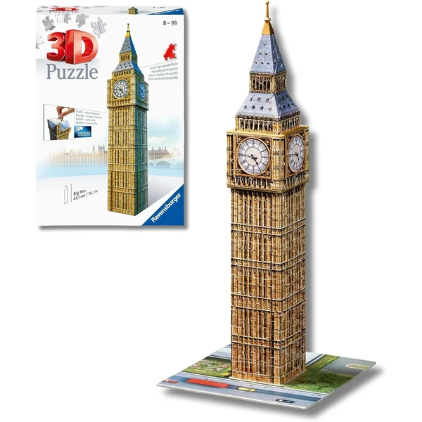
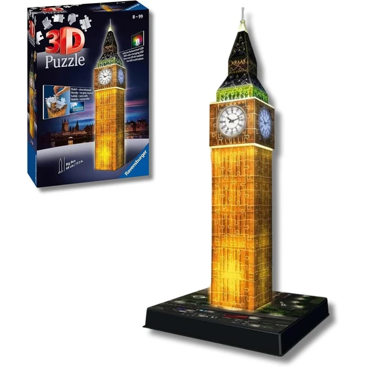

✨ Guía especial
Puzzle 3D del Big Ben: modelos, marcas y versión con luz LED
Qué incluye la maqueta y qué marca elegir
Qué incluye la maqueta y qué marca elegir
El Big Ben es el segundo monumento más popular dentro de la categoría de puzzles 3D, justo por detrás de la Torre Eiffel. En esta guía repasamos qué incluye la maqueta, la versión con luz LED, y qué marca elegir entre las tres que compiten por este modelo.
La maqueta reproduce la torre del reloj con el nivel de detalle habitual en este tipo de réplicas, en un formato vertical similar al de la Torre Eiffel. El número de piezas y el tamaño final varían según la versión y la marca, así que conviene revisar la ficha de producto si buscas un tamaño concreto para exponerla.

Big Ben Ver en Amazon →Igual que ocurre con la Torre Eiffel, el Big Ben también tiene versión con luz LED integrada: el circuito ilumina la torre del reloj, con un efecto especialmente llamativo dado el formato vertical de la estructura. No está disponible en todas las marcas ni tiendas de forma constante, así que conviene revisarlo en la ficha de producto antes de comprar, ya que sube el precio frente a la versión estándar.

Big Ben Led Ver en Amazon →Tres marcas compiten en este modelo, cada una con su propio perfil. Ravensburger ofrece el acabado más premium y mayor precisión de pieza, siendo la más popular de las tres asociadas al Big Ben. CubicFun, especializada en monumentos, aporta una alternativa más económica con buena relación calidad-precio, igual que vimos en Torre Eiffel. Rolife completa el trío con un enfoque algo distinto, más orientado a maquetas decorativas de estilo detallado — una opción menos conocida pero con presencia real en el mercado.
Los tres modelos (Ravensburger, CubicFun y Rolife) se encuentran principalmente en Amazon, donde hay más variedad disponible de forma constante que en tienda física.
Ravensburger ofrece el acabado más premium, CubicFun una alternativa más económica y Rolife un enfoque más decorativo. La elección depende de si priorizas precisión, precio o estética.
Sí, con un efecto especialmente llamativo dado el formato vertical de la torre, aunque no está disponible en todas las marcas ni tiendas de forma constante.
Varía según la versión y la marca — conviene revisar la ficha de producto si buscas un tamaño concreto para exponerla.
Principalmente en Amazon, con la mayor variedad disponible de forma constante.
Todos los tipos, materiales, marcas y modelos según la edad.